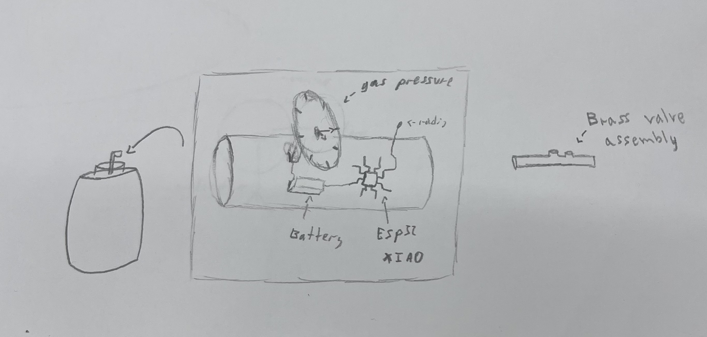
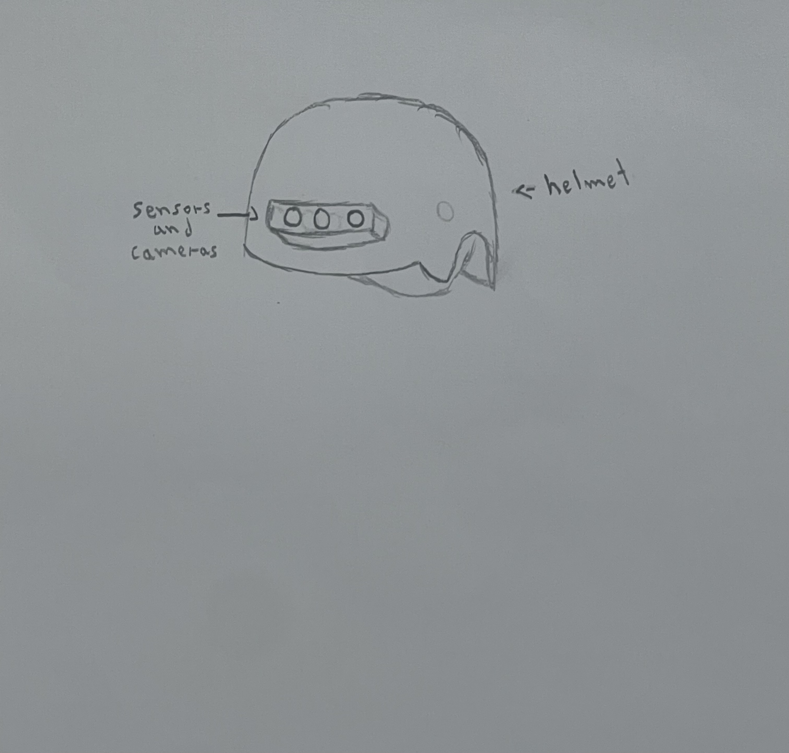

The idea is a brass valve cap that will be redesigned to detect when the gas inside of the LGP cylinder gets empty. On the moment that is getting empty, it will send a signal to the company that sells the LGP cylinder, serving as a product that will provide information about all the customers that have an empty LGP cylinder before the costumer notices. The adapter will be placed between the LGP cylinder and the brass valve assembly.

100 mirrors (each mirror will have a one-meter radius) that will be placed on a big circle (16 meters radius). In the middle of that circle, there will be one two-meter radius mirror placed eight meters up from the surface, pointing to the ground. The 100 meters will always be pointed to the mirror in the middle, with the objective of always redirecting all their sunlight into the center mirror. They will do that by having a motor that can change the angle of each individual mirror, having powerful cameras placed in strategic places around the circle to provide the necessary information to an AI that will control the position and angle of all mirrors. The purpose of this is to have 315 square meters of sunlight from the moon to be redirected into the two-meter radius mirror, which will redirect all its sunlight into multiple lenses that will magnify all that light into one very small spot that could achieve a stable constant laser on the surface of the moon that is 1500 C (possibly higher).
A helmet (glasses if possible) that has cameras that will feed the visual information to a powerful AI that will provide the necessary information for the blind to be able to navigate the real world.
